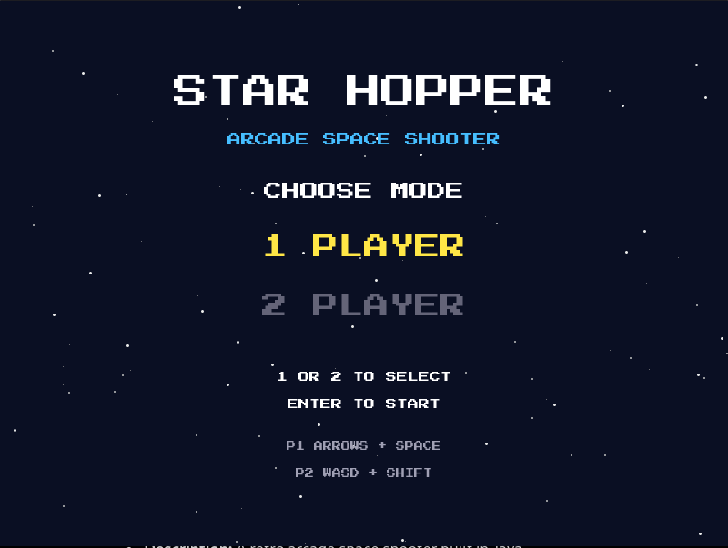
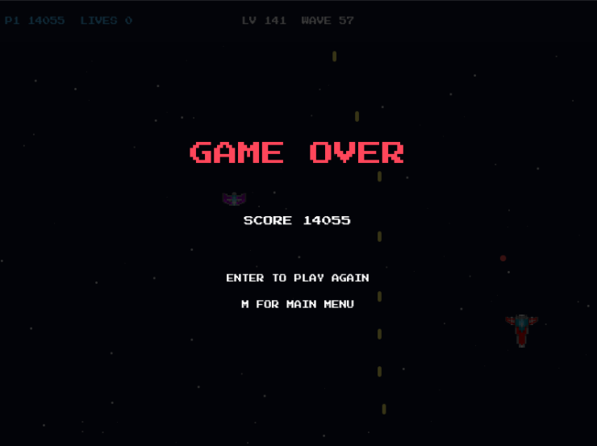
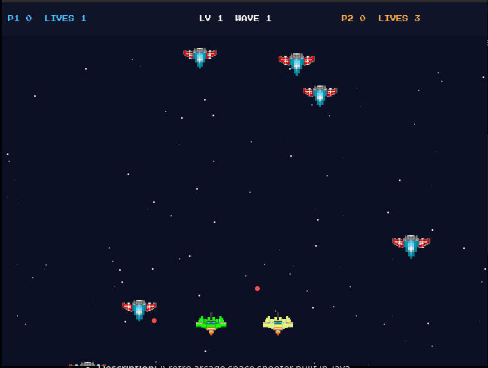

Released game
Star Hopper
Star Hopper is a retro two-player arcade space shooter. Pilot your spaceship through space, destroy incoming enemies, dodge enemy attacks, and try to survive for as long as possible.
Download for LinuxLinux x86_64 AppImage. Download, allow it to run if needed, and open it.
Screenshots



About Star Hopper
Star Hopper is an arcade space shooter where you control a spaceship and fight against incoming enemy ships. You can play alone or with another player on the same computer.
Enemies enter from the top of the screen and move downwards. Some enemies can also shoot bullets toward the players. Your goal is to destroy enemies, earn points, collect power-ups, and stay alive.
How to Play
When the game opens, choose between one-player and two-player mode. Press 1 for one player or 2 for two players. Press Enter to start.
Each player begins with three lives. Shoot enemies to earn points and avoid collisions and enemy bullets. When a player loses all their lives, they cannot continue playing that round.
Controls
| Player | Movement | Shoot |
|---|---|---|
| Player 1 | Arrow keys | Space |
| Player 2 | W, A, S, D | Left Shift |
Other controls
- P: Pause or resume the game.
- M: Return to the main menu.
- Enter: Play again after Game Over.
Enemies
There are three types of enemies in Star Hopper. Each one behaves differently and gives a different number of points.
Basic Enemy
The basic enemy moves down the screen and can drift from side to side. Destroying one gives 10 points.
Fast Enemy
Fast enemies move more quickly than basic enemies. They start appearing from level 2 and give 15 points.
Shooter Enemy
Shooter enemies can fire bullets toward the players. They begin appearing from level 3 and give 20 points.
Levels and Waves
Star Hopper tracks your score, level, and wave. Your level increases as the combined player scores increase. Waves also advance as your score grows.
As the level gets higher, enemies spawn more often and their movement becomes faster. Enemy attacks also become more challenging.
Power-ups
Defeating an enemy has a chance to make a power-up appear. Collect it with your spaceship to activate rapid fire.
Power-ups also give you an extra life if you have fewer than five lives remaining.
Game Over
In one-player mode, the game ends when Player 1 loses all their lives.
In two-player mode, the round continues as long as at least one player is still alive. The game ends when both players run out of lives.
After Game Over, press Enter to start another round or M to return to the main menu.